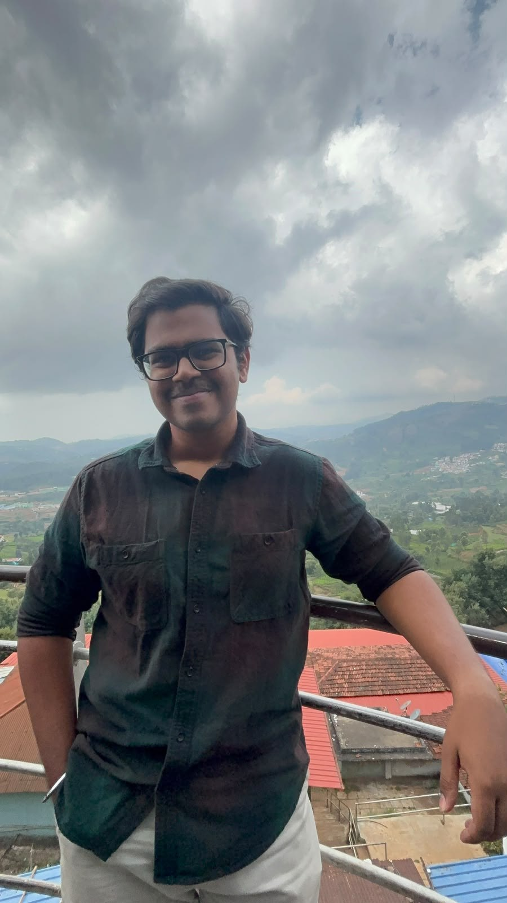

Robotics Engineer · Incoming MS, WPI
Manipulator design, optimization & control.
I work on the kinematics, dynamics, and impedance control of robotic manipulators — from link-length optimization of redundant arms to compliant manipulation on the Franka Emika Panda. Graduating from NIT Tiruchirappalli, heading into an MS in Robotics Engineering at WPI, working toward a PhD in manipulation & whole-body control.

Research & Work
xTerra Robotics · IIT Kanpur
Bachelor's Thesis · NIT Trichy & xTerra Robotics
NIT Tiruchirappalli
Indian Institute of Science, Bengaluru
National Institute of Technology, Tiruchirappalli · CGPA 7.86/10
Research Output
2026 IEEE North-East India International Energy Conversion Conference and Exhibition
5th International Conference on Emerging Electronics and Automation
9th International Conference on Inventive Systems and Control
Selected Work
6-DOF Cartesian impedance controller — 3.8 mm peak / 0.14 mm steady-state tracking error. Two-camera 3D localization pipeline on the Franka Panda in MuJoCo — 1.4 mm position, 0.1° yaw error. Closed-loop pick-and-place across 50 randomized trials, 100% success.
Jan 2026 — PresentTD3 & DDPG actor-critic agents for dynamic controller-gain tuning, reward shaped on LQG cost. 60% lower cumulative tracking error (IAE, ISE) vs. fixed-gain PID, LQR, and LMPC, with demonstrated disturbance rejection.
May 2025 — Aug 2025Quasi-linearized 4th-order inner-loop model via feedback linearization. Mamdani Type-1 fuzzy inference system in MATLAB for online Q/R adaptation — 28.92% more robust than offline tuning.
Mar 2024 — Jun 2024Craig DH kinematic model, NSGA-II link-length optimization, Recursive Newton-Euler dynamics at 5 kg payload, and a damped least-squares IK solver with adaptive Gaussian damping.
Jan 2026 — May 2026Toolset
Get in Touch
Reaching out about manipulation research, control systems, or WPI — happy to talk. Best by email or LinkedIn.